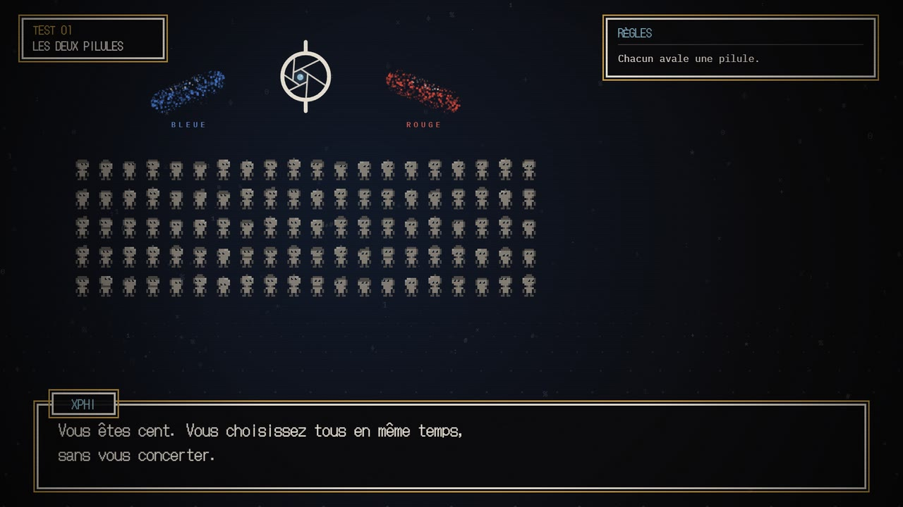
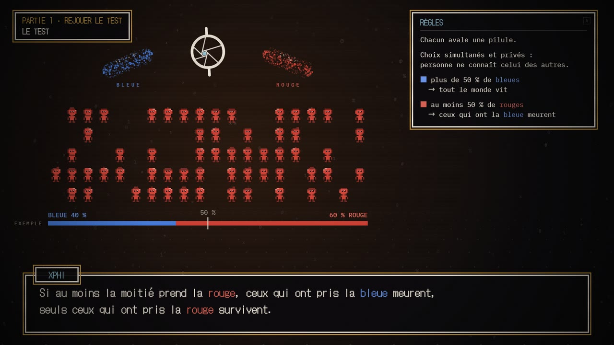
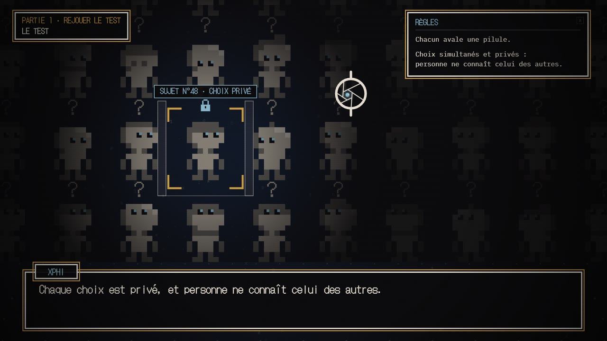
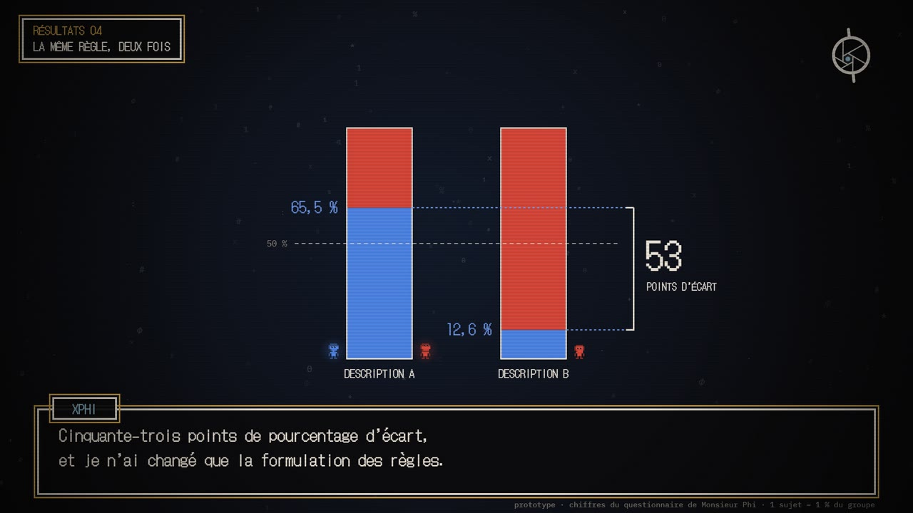
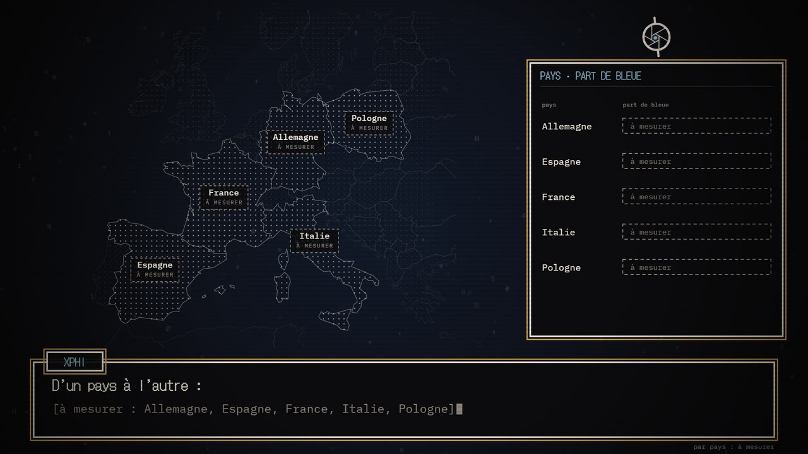
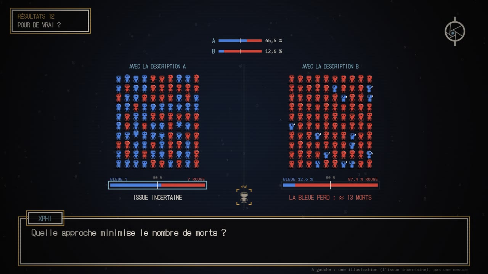

Xphi
Philosophie expérimentale · magazine de 26 minutes + histoire jouable en ligne
Des milliers d’Européens réfléchissent en même temps à la même expérience de pensée. Puis une émission leur montre ce qu’ils ont répondu — et pourquoi ça change selon un seul petit détail.
Auteur — Thibaut Giraud (Monsieur Phi)
Production — Ronan Letoqueux · NES (Nerd Entertainment System)
Document de travail pour Arte · octobre 2026
01 Le projet en deux mots
Chaque numéro de Xphi part d’une seule question : une expérience de pensée, posée au public sur un site volontairement sobre, où chacun fait son choix. Quelques semaines plus tard, l’émission de 26 minutes anime l’histoire et raconte ce que l’Europe a répondu.
Le ressort : il existe à chaque fois plusieurs versions de la même histoire, qui ne diffèrent que par un détail (un mot, un point de vue, l’ordre des phrases). Chaque joueur en reçoit une, tirée au sort. Ce qui nous intéresse n’est pas « X % des gens pensent que… », mais l’écart entre les versions : la preuve qu’un détail suffit à faire basculer nos jugements moraux.
Questionnaire « des deux pilules » de Monsieur Phi, près de 10 000 répondants. Même dilemme, deux formulations : c’est exactement le genre de résultat que Xphi met en scène.
02 La philosophie expérimentale
Pendant longtemps, les philosophes ont raisonné à partir de leurs propres intuitions, en supposant qu’elles étaient partagées par « tout le monde ». Depuis le début des années 2000, la philosophie expérimentale (« X-Phi ») va vérifier : elle interroge réellement les gens et mesure comment leurs intuitions se répartissent. Et elle découvre souvent qu’elles ne ressemblent pas à ce que les philosophes « de fauteuil » imaginaient.
Exemple
Contrairement à une idée reçue, une large majorité des gens ne voit aucune contradiction à juger qu’une personne agit librement tout en étant entièrement déterminée.
À grande échelle
Le projet Moral Machine a recueilli des millions de décisions dans plus de 200 pays sur des variantes du dilemme du tramway, avec des différences nettes selon les cultures.
Xphi ne prétend pas inventer la méthode. Il lui donne une histoire à jouer, une échelle européenne, et une émission pour en raconter les résultats.
03 Phi, le personnage
Le fil rouge de l’émission est Phi, une intelligence artificielle créée pour l’émission. Sa mission : comprendre la morale des humains pour pouvoir s’aligner sur elle. Elle sait tout ce qu’on peut savoir du monde… sans l’avoir jamais vécu.
Phi n’a pas de corps : son visage est le logo de l’émission, un diaphragme d’objectif à pupille bleue qui regarde, cligne, s’étonne et dessine les résultats à la craie. Ironie polie d’IA de laboratoire, curiosité d’enfant : elle ne juge jamais un choix.
Elle relie la philosophie à l’actualité : aligner une IA sur nos valeurs, encore faut-il les connaître. Si l’ordre des mots suffit à changer nos réponses, comment aligner une machine ?
Thibaut n’apparaît pas à l’image : l’émission se décline dans toutes les langues d’Arte sans doubler un présentateur. Son ton et son humour passent par Phi.
04 Deux objets séparés, deux rôles opposés
Le site et l’émission ne font pas le même travail, et c’est voulu : l’un mesure, l’autre raconte.
Le site : rester neutre
C’est là que se déroule l’expérience, donc rien ne doit orienter la réponse. Le texte du questionnaire tel quel, un dessin épuré au trait, aucune image chargée d’émotion, une musique identique d’une histoire à l’autre, et on ne voit jamais ce que choisissent les autres. Sur téléphone ou ordinateur, dans les six langues d’Arte.
L’émission : mettre en scène
Une fois les réponses recueillies, plus besoin de neutralité : l’émission raconte l’histoire en animation générée par le code, et Phi en fait un vrai récit.
- Rejouer l’histoire et dévoiler ses variantes (≈ 8 min)
- Les résultats, chacun d’abord posé comme une devinette, puis révélé ; écarts entre pays, âges, genres (≈ 12 min)
- Ce que ça veut dire — et ce que les résultats ne permettent pas de dire (≈ 6 min)
05 Pourquoi Arte
- Un programme qui vit avant, pendant et après la diffusion : la question circule sur les réseaux d’Arte, les réponses viennent de toute l’Europe, l’émission rend au public ce qu’il a donné.
- La comparaison européenne, à la manière de Karambolage, mais appliquée à nos jugements moraux : « les Français ont été plus sensibles à tel détail que les Allemands ».
- Un protocole honnête : consentement explicite, aucune donnée personnelle, et des données anonymes ouvertes aux chercheurs.
06 Les pistes en cours
Un prototype existe déjà en ligne (lien en bas de page), pour tester avec Thibaut les histoires, le personnage et le langage visuel.
Les deux pilules
Mille humains capturés, isolés, deux pilules et une règle. Le questionnaire des 10 000 réponses, raconté et dessiné par Phi, avec la règle formulée de deux façons.
La boucle
Liberté et responsabilité dans une journée qui recommence sans fin, façon « Un jour sans fin ». Seul le joueur se souvient.
La roulette russe procréative
Inspirée de l’argument anti-nataliste de Benatar : un bébé endormi, un barillet… et la question de ce qu’on fait courir à quelqu’un en le faisant naître.
Un seul langage visuel, dessiné par le code
La direction artistique de Thibaut, commune au site et à l’émission : un écran de jeu rétro, la nuit, la craie, l’œil de Phi, des pilules en nuages de caractères, des sujets en pixels. Rien n’est peint ni dessiné à la main : tout est animé par le code, image par image dans le navigateur, et la version diffusée est exactement celle que le public a jouée.
Le site Ce langage au plus sobre : le texte du questionnaire tel quel, les règles qui s’écrivent, le choix. Rien qui oriente.
L’émission Le même langage, déployé en récit : un participant que l’on suit, la carte d’Europe, les deux salles, l’issue. Jamais de violence à l’image : quand un risque se réalise, on coupe au noir.
Une seule couleur vive appartient au joueur : le laiton, qui marque son choix et rien d’autre.
07 Qui porte le projet
Thibaut Giraud
Auteur
Docteur en philosophie, il anime depuis 2016 Monsieur Phi, référence de la vulgarisation philosophique (415 000+ abonnés). Auteur de Curiosités philosophiques (Seuil). Ses questionnaires ont déjà donné lieu à des publications scientifiques.
Ronan Letoqueux
Producteur · NES (Nerd Entertainment System)
Producteur du Vortex. Xphi en est la suite logique : une vulgarisation exigeante où le public ne se contente plus d’écouter, il participe. Il pilote la fabrication et la direction artistique.
Voir le prototype
L’épisode, le test jouable, les résultats et la fiche de Phi :
realmyop.github.io/xphi-presentation-generale
08 Ce que ça donne déjà
Captures du prototype en ligne, dans la direction artistique de Thibaut : un écran de jeu rétro, la nuit, la craie, le laiton pour le joueur, et l’œil de Phi. L’épisode dure 15 min 50, avec la voix de Phi et la musique de La Grande Table. Ses chiffres viennent du vrai questionnaire de Monsieur Phi (près de 10 000 répondants), présentés comme ceux de la collecte ; ceux des pays restent à mesurer, et les messages des réseaux sont inventés.





